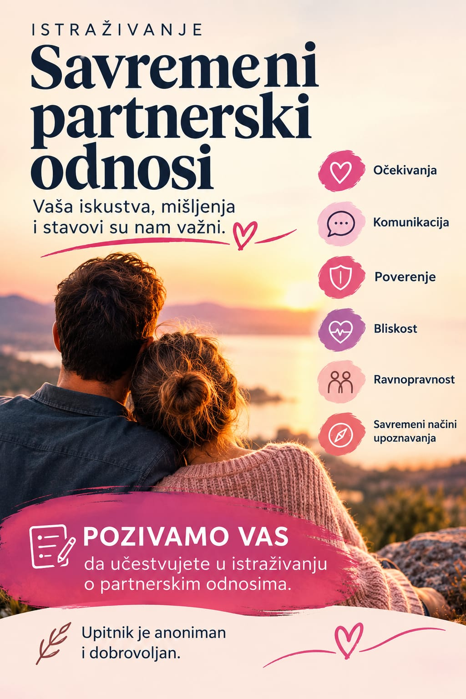

Istraživanje
Savremeni partnerski odnosi: anonimno istraživanje psihologa i psihoterapeuta
Kakvi su danas partnerski odnosi i šta nam je u njima zaista važno? Vaša iskustva, mišljenja i stavovi su mi važni.

Poziv na učešće
Šta očekujemo od partnera? Koliko su nam važni bliskost, poverenje, privlačnost i sigurnost? Kako komuniciramo, postavljamo granice i prolazimo kroz nesuglasice? Šta se promenilo u načinu na koji se upoznajemo i gradimo odnose?
Ova i mnoga druga pitanja bila su polazište za istraživanje o savremenim partnerskim odnosima koje sam pripremila.
Kao psiholog i psihoterapeut, kroz svoj rad svakodnevno se susrećem sa pitanjima bliskosti, poverenja, razumevanja i izazova koje partnerski odnosi nose. Želim da bolje razumemo kako danas razmišljamo o ljubavi, šta nam je potrebno u odnosima i sa kojim se teškoćama susrećemo.
Zato mi je važno da čujem različita iskustva i mišljenja, bez pretpostavke da postoji samo jedan ispravan način da volimo i budemo u odnosu.
Upitnik je anoniman, a učešće dobrovoljno. Nema tačnih i pogrešnih odgovora.
Šta istraživanje obuhvata
Upitnik se bavi različitim aspektima partnerskih odnosa:
- očekivanja od partnera
- komunikacija i konflikti
- poverenje i ljubomora
- bliskost i seksualnost
- ravnopravnost i samostalnost
- savremeni načini upoznavanja
Zašto ga radim
Cilj je da se prikupe različita mišljenja i iskustva, sagledaju zajedničke teme i razlike u doživljavanju partnerskih odnosa i doprinese njihovom boljem razumevanju. Rezultati će biti analizirani zbirno i mogu poslužiti kao osnova za buduće stručne i edukativne sadržaje.
Pozivam vas da učestvujete i doprinesete boljem razumevanju savremenih partnerskih odnosa. Ako smatrate da bi ova tema mogla biti važna i drugim ljudima, biće mi dragoceno da podelite ovu stranicu.
Hvala vam na vremenu, poverenju i doprinosu.
Sanja Grubor psiholog i psihoterapeut